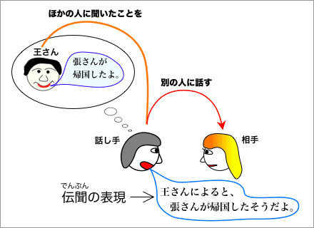

伝聞の表現
「〜と聞いた／〜って聞いた」という表現は、ほかの人に聞いたこと（内容）を相手に話す表現である。このように、ほかの人に聞いたことを話す表現を『伝聞の表現』という

さまざまな伝聞の表現
伝聞の表現には、「〜と聞いた／〜って聞いた」のほかにもさまざまな言い方がある。たとえば、確実なことを話す伝聞の表現に「〜そうだ」、「〜って（話だ／ことだ）」などがある。また、不確実なことを話す伝聞の表現に「〜らしい」、「〜みたいだ」などがある。
- 伝聞の表現
- ほかの人に聞いた内容を別の人に話す表現
- ほかの人に何かを聞いたということを述べる表現：「〜と聞いた」、「〜って聞いた」
- 確実なこと［話し手が本当だと思っていること］を相手に伝える表現：「〜そうだ」、「〜って（話だ／ことだ）」など。
- 不確実なこと［本当かもしれないし、間違っているかもしれないこと］を相手に伝える表現：「〜らしい」、「〜みたいだ」など。
ほかの人に何かを聞いたということを述べる表現
「〜と聞いた／〜って聞いた」という表現は、自分がほかの人に何かを聞いたという事実を述べる表現である。ほかの人に聞いた内容を相手に伝える気持ちよりも、聞いたという事実を相手に伝える（主張する）気持ちが強い。なお、くだけた話しことばでは「〜って聞いた」が使われる。
- 明日の会議は中止だと聞いた。
- 来週の火曜日にテストがあると聞きました。
- 杉本くんに子供ができたって聞いたよ。
- 会議【名詞】（かいぎ〔1〕）
- 中止【名詞】（ちゅうし〔0〕）
- テスト【名詞】（テスト〔1〕）：テストがある／↔ テストがない［外来語］test
- 子供【名詞】（こども〔0〕）
- 子供ができる
「〜と／〜って聞いている」
「〜と／〜って聞いた」には「〜と／〜って聞いている」というかたちもある。意味は、ほぼ同じである。ただし、「〜と／〜って聞いた」よりも「〜と聞いている」の方が『聞いた内容』を相手に話す気持ちが強くなる。なお、この「〜と聞いている。」は、聞く行為の継続を示す「〜を聞いている。」とは意味がちがうので注意すること【参考→「〜を聞いている」と「〜と聞いている」】。
- 「〜と／〜って聞いた」
- 明日の試合は中止だと聞いた。
- 明日は雨が降るって聞いたよ。
- 子供が泣いてるって聞いたんだけど。どこにいるの？
- 「〜と／〜って聞いている」
- 次の水曜日は会議があると聞いている。
- 日曜日にみんなでキャンプに行くって聞いてる。
- 東京は物価が高いと聞いているんですが、本当ですか？
- 試合【名詞】（しあい〔0〕）
- キャンプ【名詞】（キャンプ〔1〕）
- 東京【固有名詞】（とうきょう〔0〕）
- 物価【名詞】（ぶっか〔0〕）
- 物価が高い／↔物価が安い
確実なことを話す表現
「〜そうだ」、「〜って」、「〜って話だ」（書きことばでは「〜という話だ」）、「〜ってことだ」（書きことばでは「〜ということだ」）は、話し手が本当だと思っていること（＝確実なこと）を相手に伝える伝聞の表現である。
- 張くんは病気だそうだ。
⇒ 張くんは病気だって。
⇒ 張くんは病気だって話だ。
⇒ 張くんは病気だっていうことだ。
- 橋本先生が結婚するって。
- 来週の授業は休みだって話だ(よ)。
- 来週の授業では、作文を書くってことだ(よ)。
- 病気【名詞】（びょうき〔0〕）
- 結婚する【３類動詞】（けっこんする〔0〕）
情報源を示す表現
伝聞の表現は、『情報源を示す表現』といっしょに使われることがある。情報源を示す表現には次のようなものがある。
- Ａに聞いたんだけど〜
例：劉さんに聞いたんだけど、竹南にステーキがおいしいお店があるんだって。
- Ａが言ってたんだけど〜
例：おじさんが言ってたんだけど、あの先生も昔は美人だったんだって。
- Ａによると〜
例：NHKのニュースによると、日本で大きな地震があったということです。
- Ａの話によると〜
例：子供の話によると、学校の給食はおいしくないそうだ。
- Ａに聞いたところによると〜
例：小野くんに聞いたところによると、横山さんが学校をやめるという話です。
- Ａの話では〜
例：友だちの話では、近くにスーパーができるそうだ。
- Ａに聞いたところでは〜
日本の友だちに聞いたところでは、日本では、現在、紅葉がきれいなのだそうです。
- Ａによれば〜
例：スポーツ新聞の報道によれば、プロ野球チームのオーナーが辞任するそうだ。
- Ａの話によれば〜
例：山田先生の話によれば、昔の学校は木造だったそうだ。
- ステーキ【名詞】（ステーキ〔2〕）
- 昔【名詞】（むかし〔0〕）
- 美人【名詞】（びじん〔1〕）［※女の人に対して言う。男の人に対しては「美男子（びだんし／びなんし）」という名詞があるが、現在ではほとんど使われなくなっている。そのため、男の人に対しては、「かっこいい（人）」のように〈形容詞（＋名詞）〉で言うことが多い（なお、な形容詞の「ハンサムな handsome」は現在ではほとんど使われなくなっている）。なお、俗語では「イケメン」という名詞が使われる。］
- 昔は〜だった
- 給食【名詞】（きゅうしょく〔0〕）
- やめる［辞める］【１類動詞】（やめる〔0〕）
- スーパー【名詞】（スーパー〔1〕）／スーパーマーケット【名詞】（スーパーマーケット〔5〕）[外来語]supermarket
- 現在【名詞】（げんざい〔1〕）［※副詞的な用法］
- 紅葉【名詞】（こうよう〔0〕）
- スポーツ新聞【名詞】（スポーツしんぶん〔5〕）
- 報道【名詞】（ほうどう〔0〕）
- プロ野球【名詞】（プロやきゅう〔3〕）[外来語]professional
- チーム【名詞】（チーム〔1〕）[外来語]team
- オーナー【名詞】（オーナー〔1〕）[外来語]owner
- 辞任する【３類動詞】（じにんする〔0〕）
- 木造【名詞】（もくぞう〔0〕）
不確実なことを話す表現
「〜らしい」、「〜みたいだ」は、本当かもしれないし、間違っているかもしれないこと（＝不確実なこと）を相手に伝える伝聞の表現である。
- 小野くんと山下さんが結婚したらしいよ。
- 木曜日に球技大会があるらしいけど、応援に行く？
- この前のテストはみんな合格だったみたいだよ。
- 木村さんはもうすぐ日本に帰るみたいだよ。
- 球技大会【名詞】（きゅうぎたいかい〔4〕）
- 応援【名詞】（おうえん〔0〕）
- 合格【名詞】（ごうかく〔0〕）